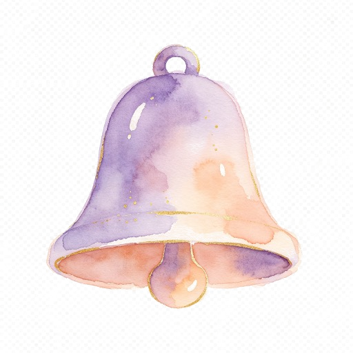

Reminders
A gentle daily rhythm
Set a routine time for a reminder inside Rhythme. It appears when you open the app after that time; it does not send a phone notification.
Choose my in-app reminderWhat you can see today
Your daily suggestions use the context you confirm and the dated notes saved here. You can change that context, edit the notes or leave a suggestion undone.
Review my daily guidance →Phone notifications
Push delivery, medication alarms, predicted period dates and fertile-window alerts are not enabled. Rhythme does not identify ovulation or promise an alert while the app is closed.
Return to Settings